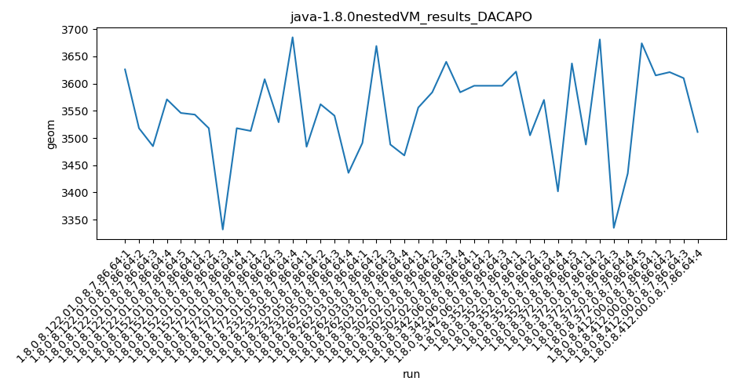
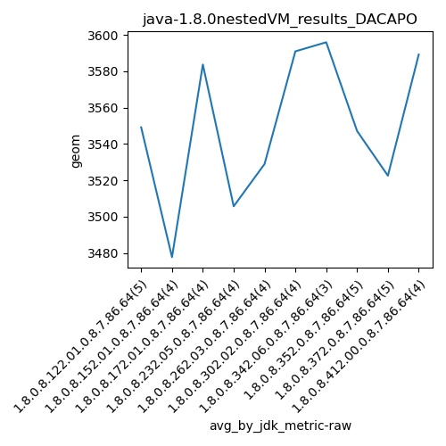
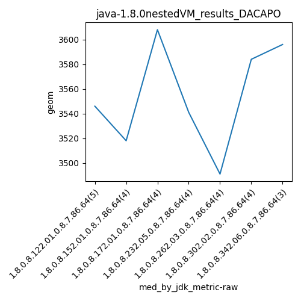

java-1.8.0 DACAPO
Context at bottom
/home/jvanek/git/benchmarks-in-nested-virtualisation-toolchain/final_results/nestedVM_results/nestedVM_results_J2DBENCH
java-1.8.0
DACAPO
/home/jvanek/git/benchmarks-in-nested-virtualisation-toolchain/final_results/nestedVM_results/nestedVM_results_RADARGUNs3
java-1.8.0
DACAPO
/home/jvanek/git/benchmarks-in-nested-virtualisation-toolchain/final_results/nestedVM_results/nestedVM_results_DACAPO
java-1.8.0
DACAPO
nestedVM_results_DACAPO
final score
Expected number of java-1.8.0 JDKs: 10
1st avgmed_alljdks_metric:
/home/jvanek/git/benchmarks-in-nested-virtualisation-toolchain/final_results/result_processing.py /home/jvanek/git/benchmarks-in-nested-virtualisation-toolchain/final_results/nestedVM_results/nestedVM_results_DACAPO geom False
values: [3626, 3518, 3485, 3571, 3546, 3543, 3518, 3332, 3518, 3513, 3608, 3529, 3685, 3484, 3562, 3541, 3436, 3491, 3669, 3488, 3468, 3556, 3584, 3640, 3584, 3596, 3596, 3596, 3622, 3505, 3570, 3402, 3637, 3488, 3681, 3335, 3435, 3674, 3615, 3621, 3610, 3511]

Expected number of iterations: 5
final number of values: 42 out of 50
Pass rate: 84.0%
values: (3332, 3685, 3547.3571428571427, 3556)

** accuracy from all jdks and runs
more is better
MIN: 3332
MAX: 3685
AVG: 3547.3571428571427
MED: 3556
Relative differences 1:
MIN-MAX: 10.0 %
MIN-AVG: 6.0 %
MIN-MED: 6.0 %
MAX-MIN: -11.0 %
MAX-AVG: -4.0 %
MAX-MED: -4.0 %
AVG-MED: 0.0 %
stored to java-1.8.0.properties. sort | uniq that!
2nd avgmed_by_jdk_metric:
values: [3549.2, 3477.75, 3583.75, 3505.75, 3529.0, 3591.0, 3596.0, 3547.2, 3522.6, 3589.25]

values: [3546, 3518, 3608, 3541, 3491, 3584, 3596, 3570, 3488, 3615]

values: (3477.75, 3596.0, 3549.15, 3549.2)
values: (3488, 3615, 3555.7, 3570)

** accuracy from all jdks where runs were avged
more is better
MIN: 3477.75
MAX: 3596.0
AVG: 3549.15
MED: 3549.2
Relative differences 1:
MIN-MAX: 3.0 %
MIN-AVG: 2.0 %
MIN-MED: 2.0 %
MAX-MIN: -3.0 %
MAX-AVG: -1.0 %
MAX-MED: -1.0 %
AVG-MED: 0.0 %
stored to java-1.8.0.properties. sort | uniq that!
** accuracy from all jdks where runs were medianed
more is better
MIN: 3488
MAX: 3615
AVG: 3555.7
MED: 3570
Relative differences 1:
MIN-MAX: 4.0 %
MIN-AVG: 2.0 %
MIN-MED: 2.0 %
MAX-MIN: -4.0 %
MAX-AVG: -2.0 %
MAX-MED: -1.0 %
AVG-MED: 0.0 %
stored to java-1.8.0.properties. sort | uniq that!
/home/jvanek/git/benchmarks-in-nested-virtualisation-toolchain/final_results/nestedVM_results/nestedVM_results_JMH
java-1.8.0
DACAPO
/home/jvanek/git/benchmarks-in-nested-virtualisation-toolchain/final_results/nestedVM_results/nestedVM_results_SPECJBB
java-1.8.0
DACAPO
/home/jvanek/git/benchmarks-in-nested-virtualisation-toolchain/final_results/nestedVM_results/nestedVM_results_RADARGUNs1
java-1.8.0
DACAPO
pass rates:
nestedVM_results_DACAPO=84.0%
Context:
- nestedVM_results
- DACAPO